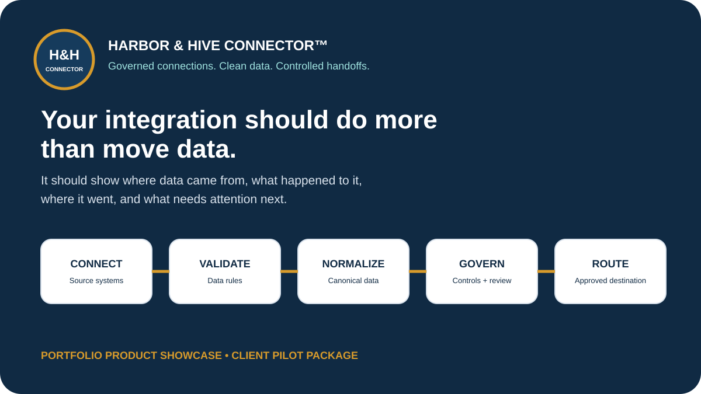

Visibility
Preserve where information came from, what validation and mapping occurred, and where the approved record was routed.
HARBOR & HIVE • PRODUCT SHOWCASE
A governed integration and data-control layer designed to receive, validate, normalize, map, route and trace business data across approved systems and workflows.

THE PRODUCT
Connector™ sits between source systems and approved destinations so data movement can be visible, governed and traceable rather than treated as an opaque point-to-point transfer.
Preserve where information came from, what validation and mapping occurred, and where the approved record was routed.
Surface missing, invalid, contradictory or unsupported information before it silently becomes a downstream problem.
Prepare governed canonical data for supported engines, providers and workflows without forcing every source system to understand every destination format.
THE GOVERNED PATH
The product architecture separates the movement of data from the business and tax logic that consumes it.
Receive information from an approved source.
Check required fields, formats, identities and data contracts.
Translate source structures into governed canonical records.
Apply mapping controls, review gates and exception handling.
Prepare the approved payload for the authorized destination.
PROMOTIONAL ASSETS
The page uses reusable Harbor & Hive Connector™ advertising assets so the product reads as a distinct offering, not simply another portfolio demo.

“Your integration should do more than move data. It should tell you what moved, what failed, and where it went.”
CAPABILITY STORY
CLIENT DELIVERY
The client starts in 00_START_HERE, then moves through implementation, operations, governance, testing and sign-off. Internal repository material and development notes stay outside the client boundary.
DOWNLOAD
Branded customer-facing materials prepared for portfolio demonstration and pilot-package review.
The consolidated client binder with a dedicated product cover, repeated Harbor & Hive Connector™ branding, governed-connection visual, and the full pilot documentation sequence.
Download PDF binderThe organized client-delivery ZIP containing Start Here, product, implementation, operations, security/governance, test/acceptance, support, and the branded master binder.
Download full package